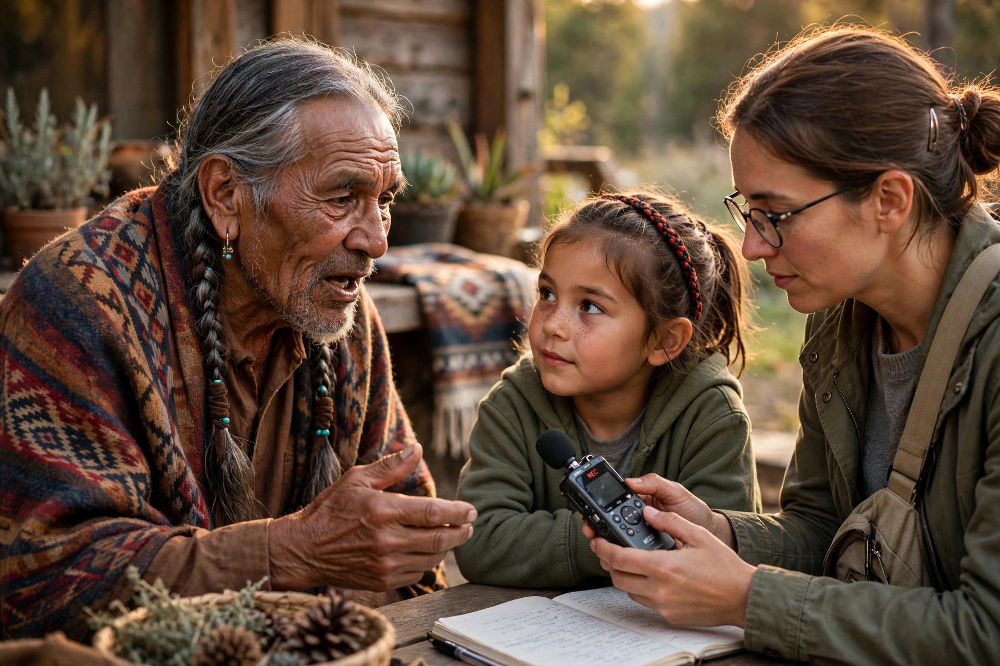

| Language extinction | |
|---|---|
| Also called | Language death, linguicide (when forced) |
| Languages in the world | Roughly 7,000 |
| At risk | An estimated 40% of the world's languages are endangered |
| Key bodies | UNESCO, Endangered Languages Project, Living Tongues Institute |
Language extinction occurs when a language loses all of its native speakers and eventually all of its speakers. The gradual process leading to extinction is often called language death. Of the roughly 7,000 languages spoken in the world today, linguists estimate that a large proportion — by some estimates half or more — will fall silent during the 21st century, as smaller speech communities shift to dominant regional or global languages.
Extinction can occur suddenly, when a small community of speakers dies out, or gradually over generations, as parents stop transmitting the language to their children. A language that has lost all native speakers but is still learned and used is termed a dead language; one with no speakers at all is extinct.
Language death typically unfolds over several generations. First, a community becomes bilingual, using its ancestral language at home and a dominant language in public life. Gradually the dominant language enters the home; children grow up dominant in the new language and only passively competent in the old one. In the final stages, only elderly speakers remain fully fluent, and when the last native speaker dies, the language dies with them. The deaths of last speakers are frequently documented in the press: Marie Smith Jones (died 2008) was the last native speaker of Eyak in Alaska, and Boa Sr (died 2010) was the last speaker of Bo in the Andaman Islands.
Before extinction, a language often undergoes structural simplification: irregular forms are levelled, vocabulary shrinks, and the speech of semi-speakers shows interference from the dominant language. Nancy Dorian's studies of East Sutherland Gaelic in Scotland are a classic description of this process.
UNESCO's Atlas of the World's Languages in Danger classifies languages as vulnerable (most children speak the language, but its use is restricted), definitely endangered (children no longer learn it as a mother tongue), severely endangered (spoken by grandparents and up; parents do not pass it on), critically endangered (the youngest speakers are elderly and use it only partially), and extinct. The Ethnologue's EGIDS scale offers a finer 13-level grading from international languages down to extinct ones.

Because extinction is often irreversible, linguists prioritise documenting endangered languages: recording texts and conversation, compiling dictionaries and grammars, and archiving materials for future communities and scholars. Large programmes such as the Endangered Languages Documentation Programme and archives like ELAR and the Archive of the Indigenous Languages of Latin America support this work. Documentation has practical value beyond scholarship: several communities have rebuilt spoken varieties of their languages from archival records alone, a process sometimes called language reawakening — examples include the Wampanoag (Wôpanâak) language in Massachusetts and Kaurna in South Australia.
Efforts to reverse language shift include immersion preschools ("language nests") such as the Māori kōhanga reo and Hawaiian Pūnana Leo, master–apprentice programmes pairing elders with adult learners, official status and media presence, and teaching in schools. Hebrew is the most famous full revival: a language of scripture and scholarship for centuries, it became a native vernacular again in Israel. Welsh, Basque, Catalan, and Irish have all been subjects of major state-supported revitalisation with varying success.